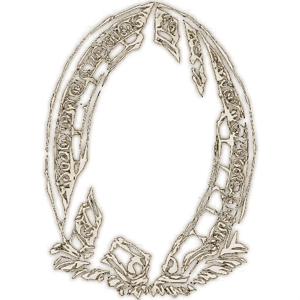
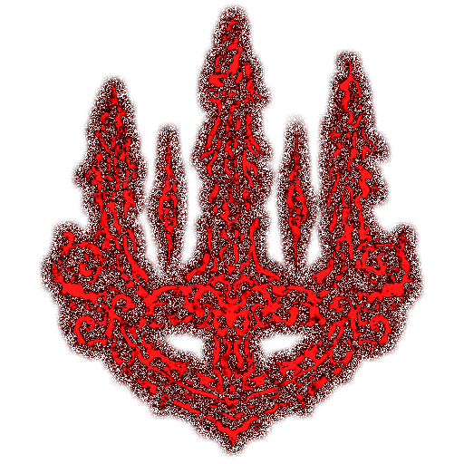
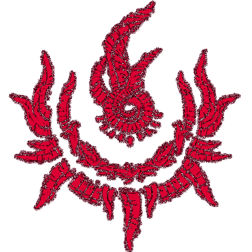
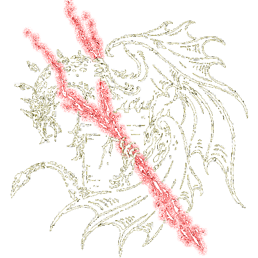
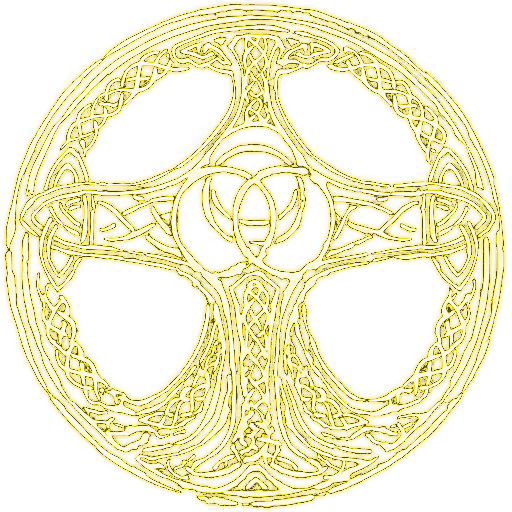
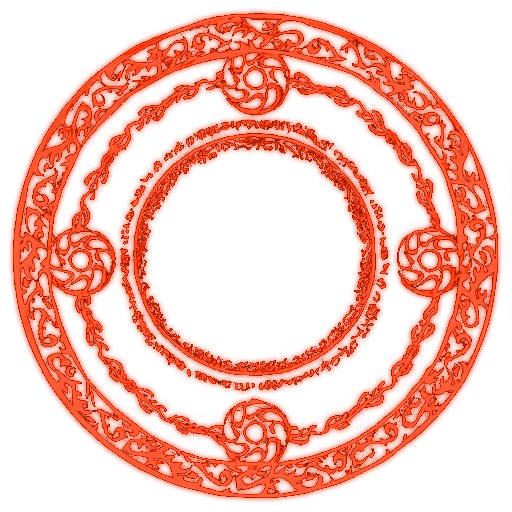
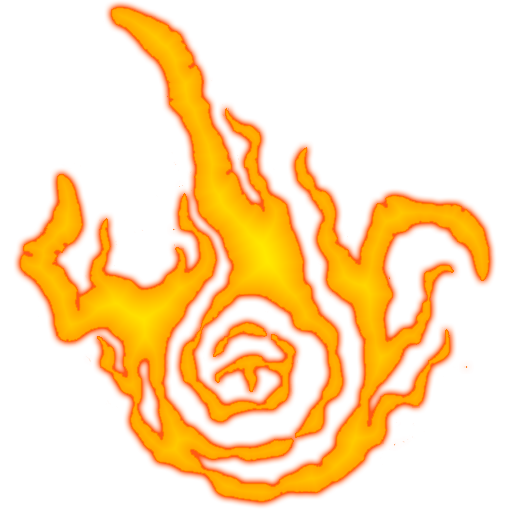
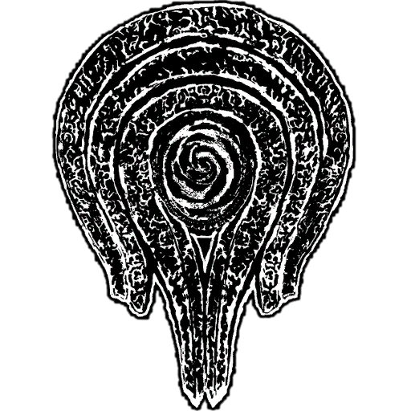
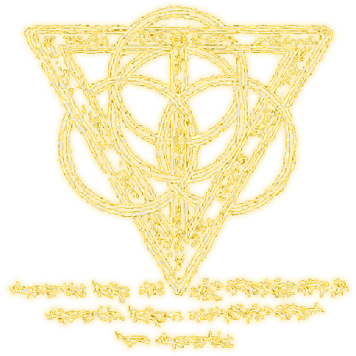

Jurados da Árvore Escarlate
Últimos defensores de uma ordem esquecida, escondidos sob a neve. Carregam consigo cicatrizes da realeza perdida.
Buffs: Resistência aumentada contra elementos do frio e veneno.
Maldições: Vulnerabilidade aumentada contra magia e fogo.

Os Filhos do Eclipse
Seres marcados pela lua e pelo sol, possuem pele dourada e olhos que brilham como estrelas. Seus corpos são feitos de puro aço.
Buffs: Dano aumentado com espadas e lanças, resistência a magias solares.
Maldições: Perda de resistência contra ataques sombrios.

Renegados do Templo
Antigos sacerdotes caídos em desgraça, com pele que exala um cheiro fétido e pálido, geralmente com olhos vazios.
Buffs: Poderes de cura aumentados, resistência ao dano físico superior.
Maldições: Vulnerabilidade a ataques mágicos e de fogo.

Os Despertos do Caos
Seres forjados nas chamas do abismo, com cicatrizes ardentes que se espalham por todo o corpo.
Buffs: Aumenta os danos causados por magias de fogo e ataque físico com armas pesadas.
Maldições: Vulnerabilidade a venenos e ataques mágicos de gelo.

Guardião do Véu
Seres silenciosos que se movem pelas sombras, com pele que reflete pouca luz. São quase invisíveis à vista comum.
Buffs: Aumento de furtividade e resistências a ataques físicos leves.
Maldições: Redução de força em combate corpo a corpo e perda de resistência contra luz.

Os Filhos da Tempestade
Seres com pele escura como nuvens de tempestade, que podem controlar os ventos e a eletricidade.
Buffs: Aumento de dano elétrico e resistência a ataques mágicos de vento.
Maldições: Fragilidade a ataques físicos e venenos.

Heróis do Crepúsculo
Desgarrados da luz, mas com uma força bruta que desafia os mais poderosos deuses. Seus corpos refletem o tom de um pôr-do-sol eterno.
Buffs: Aumento de força e resistência contra ataques mágicos.
Maldições: Dano aumentado por magias sombrias, reduz a velocidade de movimento.

Os Lamentos da Lua
Raça destinada ao esquecimento, com pele prateada que brilha à noite. Eles carregam consigo o peso de uma maldição da lua.
Buffs: Resistência a magia lunar e poder aumentado em feitiçarias da lua.
Maldições: Diminuição de resistência física e aumento da vulnerabilidade ao fogo.

Os Fragmentos do Sol
Seres feitos de pura luz, seu corpo é inconstante e brilha intensamente. Sua presença pode causar cegueira em qualquer um que olhe diretamente.
Buffs: Aumento de poder de ataque mágico e regeneração de mana rápida.
Maldições: Vulnerabilidade a ataques sombrios e perda de resistência física a longo prazo.